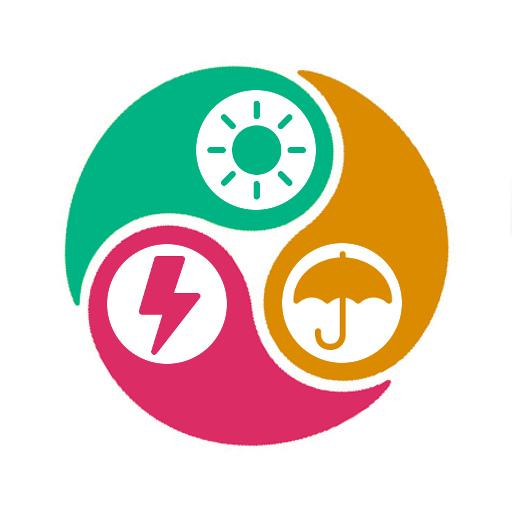

Météo du numérique
Retrouvez en continu la météo des principaux services numériques de l'académie.
Également disponible sur Google Play.
Retrouvez en continu la météo des principaux services numériques de l'académie.
Également disponible sur Google Play.